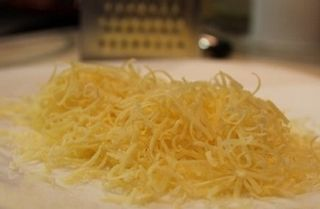
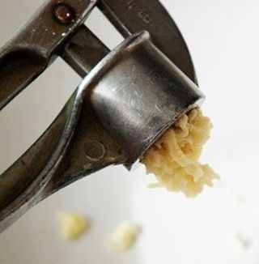
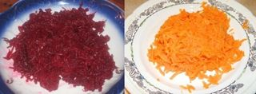

Шаг 1: Подготавливаем ингредиенты.
Перед приготовлением нам нужно будет промыть и отварить овощи до готовности. Поэтому берём 2 кастрюли и наливаем в них воды столько, чтобы покрыть овощи полностью. В одну кастрюлю выкладываем морковку и варим её примерно 20 минут до готовности.
Варить свёклу нужно будет дольше, такова уж её особенность. После того, как закипит вода в кастрюле, добавьте немного сахара и уксуса, тогда свёкла при варке сохранит свой красивый яркий розовый цвет. Варить свёклу придётся около часа-полутора, в зависимости от её размера и возраста.

Пока мы ждём, когда отварятся овощи, нужно положить сыр на 5 минут в морозилку, а потом с лёгкостью натереть его на мелкой тёрке. Только отрежьте пару ломтиков для оформления салата.

Головку чеснока очищаем от шелухи, а зубчики давим с помощью чеснокодавилки.

Отваренные готовые морковь и свёклу нужно охладить, а затем очистить от кожуры и натереть на мелкой тёрке. Теперь всё готово.
Шаг 2: Готовим салат "Полосатик".
Большую часть приготовления салата, как по времени, так и по усилиям, у нас заняла подготовка ингредиентов, а само приготовление салата примерно 10 минут.
Разделим чеснок на две части, одну добавим в миску с измельчёнными свёклой и морковью, а другую в миску с тёртым сыром. В обе же миски добавим майонеза, как для заправки салата. Жалеть его не нужно, но и щедро сдабривать тоже, остановитесь на золотой середине. Не забудьте посолить будущие слои.
Возьмём салатник, на котором будем подавать готовое блюдо, и выкладываем салат слоями друг на друга, начиная с овощного. Последним слоем тоже должен быть овощной. Сверху украшаем салат сыром, который предварительно нужно нарезать тонкими полосками.